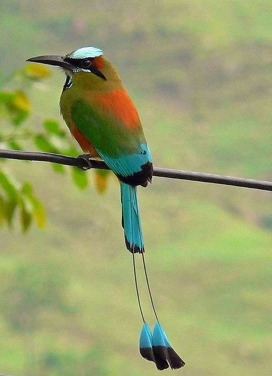
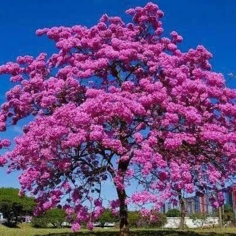
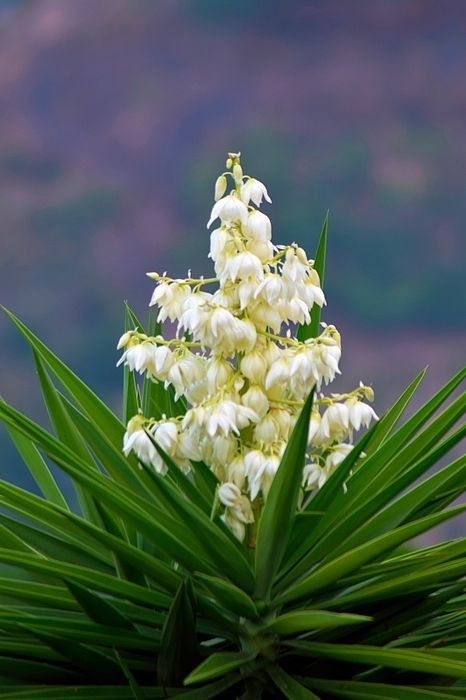

La independencia de El Salvador fue un proceso histórico.
El 15 de septiembre de 1821 se firmó el Acta de Independencia.
Marcó la separación de España y el inicio de la libertad.
Los próceres salvadoreños lucharon con valentía y amor por la patria.
Gracias a ellos nació el derecho de decidir nuestro propio destino.
La independencia nos recuerda nuestra identidad y cultura.
Es un legado que debemos cuidar y honrar cada día.
¡El Salvador es libre gracias al sacrificio de nuestros héroes!
Maestra Liduvina Lazo
Ave Nacional: 
Árbol Nacional: 
Flor Nacional: 
“TRIUNFA QUE LA CIMA LA ALCANZAN SOLO LOS VALIENTES Y TÚ ERES UNO DE ELLOS”.
| Año | Suceso | Personajes |
|---|---|---|
| 1811 | Primer grito de independencia en San Salvador | José Matías Delgado y hermanos Aguilar |
| 1821 | Firma del Acta de Independencia | Próceres centroamericanos |
| 1823 | Separación del Imperio Mexicano | Asamblea Centroamericana |
| 1841 | El Salvador se constituye como República | Francisco Malespín |
| Hoy | Conmemoración cada 15 de septiembre | Pueblo salvadoreño |